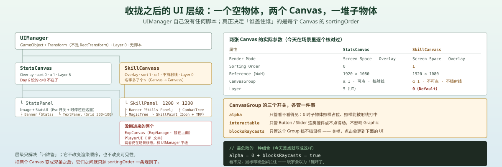
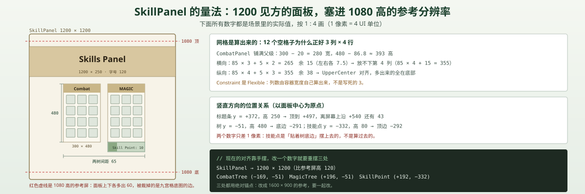

一句话说清这天的内容
把散在场景根级的 UI 收进一个空物体 UIManager，然后在这个根下面新建一张 SkillCanvass，把技能面板的空间先搭出来：一块 1200 × 1200 的九宫格面板、一条 1200 × 250 的标题条、左右两棵 300 × 480 的树（Combat / Magic）、每棵树里 12 个 85 × 85 的空格子、右下角一个 300 × 80 的技能点显示。
今天新增 0 个脚本、修改 0 个脚本。 动的东西只有三样：层级、RectTransform、以及几张 Canvas 的可见性开关。
先说结论：为什么会有「不写代码的一天」
Day 7 结束时，level 只是一个数字：升级了、经验条归零了、属性一点没变。下一个自然的动作是「升级给技能点，点数拿去点技能树」——而技能树是这套工程里第一次出现「点哪儿」的界面。
点哪儿这件事，代码给不了答案。你没法用脚本判断「这个格子离标题条是不是太近」「两棵树的间距 65 合不合适」。所以今天反过来：先把界面摆到能看，再谈它背后的数据。
这一天的价值不在产出，在于被迫把 UI 的几件事分清楚了：谁管层级、谁管渲染顺序、谁管看不看得见、谁管点不点得到。这四件事分不清，后面每加一个面板都会重踩一遍。
脚本关系
| 项 | 变化 |
|---|---|
StatsManger / StatsUI / ExpManager / 战斗四个脚本 | 全部未改 |
| 场景新增 | UIManager（空 GameObject）、SkillCanvass（Canvas）、SkillPanel 及其 4 个子分支 |
| 场景移动 | StatsCanvas 从根级移进 UIManager |
| 场景补建 | StatsPanel 里加了 Banner（"Stats"）+ Text (TMP) |
调用链：今天没有新的调用链。唯一还在跑的还是 Day 6 那条：
Esc → Input.GetButtonDown("ToggleStats") → StatsUI.Update() → Time.timeScale / statsCanvas.alpha 一起翻转
而它在今天的层级搬动之后依然能用——因为 StatsUI.statsCanvas 这个引用没有断，仍然指着 StatsCanvas 上的那个 CanvasGroup。这是今天唯一需要验证的一件事，验过了。

为什么把 UI 收进一个空物体
收拢之前，场景根级是这样：
Player / Enemy_Torch / StatsManager / EventSystem / Confiner / Elevation_Base
StatsCanvas / ExpCanvas / PlayerUI / Main Camera / Virtual Camera一半是游戏物体，一半是 UI，平级摊在一起。收拢之后：
UIManager
├ StatsCanvas （属性面板）
│ └ StatsPanel （StatsUI）
└ SkillCanvass （技能面板，今天新建）
└ SkillPanel得到的是什么
| 收益 | 具体到哪一步才兑现 |
|---|---|
| 一眼看出「UI 有几套」 | 立刻兑现：打开 Hierarchy 就知道有两个 Canvas |
| 能整组开关 | 要等写一个 UIPanelManager 才兑现（今天没有） |
| 能整组换渲染模式 | 以后想把 Overlay 换成 Camera 模式，只改一个父级 |
| 场景根不再被 UI 淹没 | 立刻兑现 |
注意前三条里两条都写着「以后」。空物体本身不是架构，它只是给架构留了个插槽。 这一点和 Day 6 的 StatsManger 不同：单例一建好，11 处引用立刻有了唯一出处；UIManager 建好之后，什么都不变。
一个容易忽略的细节：父级是 Transform，不是 RectTransform
UIManager 是一个普通 GameObject，挂的是 Transform，不是 RectTransform。两张 Canvas 的 RectTransform 以它为父。
在 Screen Space - Overlay 模式下这没有问题：Overlay Canvas 的尺寸由屏幕决定，父级是谁、父级多大，都不参与它的布局。
但它埋着一个具体的限制：如果哪天把 Canvas 改成 World Space 或 Screen Space - Camera，Canvas 就会真的继承父级的 position / rotation / scale。那时父级是一个 scale 为 1 的普通 Transform 还无所谓，一旦 UIManager 被移动或缩放（比如做「UI 整体轻微抖动」这种效果），整个界面会跟着变形。
想让 UIManager 成为合格的 UI 容器，正确做法是给它挂一个 RectTransform（新建 UI → Panel 再删掉 Image，或者直接加 RectTransform 组件），而不是留一个空 GameObject。
两个 Overlay Canvas：谁盖住谁只看一个数字
这是今天最值钱的一条认知。
场景里现在有三张 Canvas，都是 Screen Space - Overlay：
| Canvas | Sorting Order | 参考分辨率 | 装什么 |
|---|---|---|---|
StatsCanvas | 0 | 1920 × 1080 | 属性面板（Esc） |
ExpCanvas | 0 | 1920 × 108（少个 0） | 经验条 HUD |
SkillCanvass | 1 | 1920 × 1080 | 技能面板 |
兄弟 Canvas 之间，Hierarchy 顺序不管用
Overlay Canvas 是直接画在屏幕上的，它们之间的先后由 sortingOrder 决定，只有 sortingOrder 相同的时候才回退到渲染顺序。
所以「在 Hierarchy 里把 SkillCanvass 拖到 StatsCanvas 上面」这件事，对两个兄弟 Canvas 是无效的——它们的父级是同一个 UIManager，彼此不是父子关系，sortingOrder 一个 1 一个 0，技能面板永远在上面。
反过来说，如果要让属性面板盖住技能面板，只有一个办法：把 StatsCanvas 的 sortingOrder 改成 ≥ 2，或者把 SkillCanvass 的改成 −1。
嵌套 Canvas 就完全是另一套规则
| 兄弟 Canvas（现在） | 嵌套 Canvas（父 Canvas 下的子 Canvas） | |
|---|---|---|
| 排序 | 各自 sortingOrder 决定 | 继承父 Canvas 的 Sorting Layer / Order |
| 缩放 | 各自按自己的 CanvasScaler 算 | 受父 Canvas 的 scale 影响 |
| 渲染合批 | 分开 | 可以合批，性能更好 |
| 适合 | 互不相干的全屏面板 | 面板里的一块小区域（比如技能格子的 Tooltip） |
今天两张 Canvas 做成兄弟是合理的：属性面板和技能面板是同一个层级的两块屏幕，谁盖谁应该由代码明确指定，而不是靠拖拽顺序碰运气。
顺带记一个反直觉的点：Overlay Canvas 的 RectTransform 在场景文件里 scale 是 (0,0,0)。那是引擎每帧写回去的值，不要手动改它，改了也没用。

CanvasGroup：三个开关，三件事
SkillCanvass 的 CanvasGroup 现在是这个组合：
m_Alpha: 1
m_Interactable: 0
m_BlocksRaycasts: 0翻成一句话：看得见，但点不到、也不挡鼠标。
这三个字段名字都很像「开关」，实际管的是完全不同的三件事：
| 字段 | 管什么 | 关掉之后 |
|---|---|---|
alpha | 看不看得见 | 子物体变透明，但仍占布局、仍能被打中（除非同时关 blocksRaycasts） |
interactable | 控件点不点得动 | Button / Slider / Toggle 变灰、不响应，Graphic 本身不受影响 |
blocksRaycasts | 挡不挡鼠标射线 | 点击会穿过这个 Group，落到下面的 UI 上 |
最危险的一种组合
canvasGroup.alpha = 0; // 眼睛看不见
// blocksRaycasts 忘了关，还是 true眼睛看不见，鼠标却被一整屏 UI 拦住。玩家表现为「点哪儿都没反应」「键盘好像坏了」，而你打开 Scene 视图看，什么都没有——因为它是透明的。排查这种问题最费时间的不是修，是根本想不到那里有一块东西。
反过来，今天这个 alpha = 1 + blocksRaycasts = false 的组合是「骨架期」的合理配置：面板随时能看见（方便调布局），但不会把鼠标吃掉，也不影响下面还在跑的游戏。
为什么 interactable 也关了
interactable = 0 对现在的面板其实没有效果——面板里一个 Button 都没有，24 个格子全是空 RectTransform。它关着只是一个声明：这块面板还不是可交互的。
等明天把格子换成 SkillSlot（Image + Button + Tooltip）之后，这个 0 会立刻变成「所有技能格子都点不动」的原因。届时必须和写脚本同一步打开，否则会出现「代码写完了、点了没反应、以为是脚本错了」的经典误判。
SkillPanel 的骨架：一块面板、两条树、二十四个格子
场景结构与实际数字：
SkillCanvass（Canvas · Scaler 1920×1080 · GraphicRaycaster · CanvasGroup）
└ SkillPanel（Image 九宫格 · 1200 × 1200 · 居中）
├ Banner（"Skills Panel" · 1200 × 250 · y = +372 · 字号 120）
├ CombatTree（300 × 480 · (-169, -51)）
│ ├ Banner（"Combat" · 350 × 110 · y = +227 · 字号 60）
│ └ CombatPanel（铺满 · sizeDelta (-20, -86.8) · GridLayoutGroup）
│ └ 12 个空格子（85 × 85 · spacing 5）
├ MagicTree（300 × 480 · (+196, -51)）
│ ├ Banner（"MAGIC" · 350 × 110 · y = +227 · 字号 60）
│ └ CombatPanel（同名！ · 同样的 GridLayoutGroup + 12 个空格子）
└ SkillPoint（300 × 80 · (+192, -332)）
├ Icon（Image 铺满）
└ SkillPointText（"Skill Point: 10" · 字号 36 · 右对齐）网格是算出来的
GridLayoutGroup 的参数是 cellSize 85 × 85、spacing 5 × 5、Child Alignment = Upper Center、Constraint = Flexible，容器铺满父级后宽 280（300 − 20）、高约 393（480 − 86.8）。
于是排版结果完全由算术决定：
- 横向：
85 × 3 + 5 × 2 = 265，剩 15（左右各 7.5）；第四列要85 × 4 + 5 × 3 = 355，放不下 → 正好 3 列 - 纵向：
85 × 4 + 5 × 3 = 355，剩 38；Upper Center对齐 → 多出来的 38 全落在底部 → 正好 4 行 - 12 个占位物体 = 3 × 4，一个不多一个不少
这就是布局组的好处：你不用摆 12 个格子，你只需要说清楚格子多大、隔多远、往哪儿对齐。改一次 cellSize 到 90，它会自己重排成 3 列 × 4 行（90 × 3 + 10 = 280 刚好卡满），一个数字动，24 个格子跟着动（两棵树各 12 个）。
但这 12 个格子是「看不见」的
每个格子身上只有一个 RectTransform，没有 Image、没有 Button、没有 CanvasRenderer。
这带来一个具体的后果：GraphicRaycaster 只对 Graphic（Image / Text / RawImage）做射线检测。没有 Image 的物体根本不会出现在射线结果里——鼠标扫过去，什么都不会发生，连「我点到了但没反应」都不会有。
所以现在的面板准确说是「一张画」：布局是真的，交互是零。它和「能点的界面」之间差的不是代码，是每个格子上那张 Image。
为什么先摆格子，而不是先写 Skill 数据
| 先摆界面（现在） | 先写数据 | |
|---|---|---|
| 能看到什么 | 立刻看到溢出、对齐、字号大小 | 一堆 class，屏幕上是空的 |
| 发现问题的成本 | 改 RectTransform | 数据定死之后才发现「12 个格子放不下 15 个技能」 |
| 容易停在哪 | 「看起来完成了」（最容易骗自己） | 「结构写得很漂亮，但没人用」 |
这个取舍本身没错，错的是停在第一步。今天这块面板看起来已经有模有样，但它一个问题都回答不了：点一下会发生什么？
SkillPoint：图标 + 一行字
SkillPoint 是 300 × 80 的一条，位置 (+192, −332)，正好在 MagicTree 底边（−291）下面——两者只差 1 像素，是「贴着摆」而不是「算出来的」。
内部两层：
| 物体 | 锚点 | 尺寸 | 作用 |
|---|---|---|---|
Icon | 四角拉伸 (0,0)–(1,1) | 300 × 80 | 底图（Image） |
SkillPointText | 四角拉伸，左右各缩 20 | 260 × 80 | TMP_Text，字号 36，右对齐 |
「图标当底、文字右对齐、左右留 20」是 RPG 里最常见的「资源条」画法：数字靠着右边，左边留给图标和空。
坑：「Skill Point: 10」是一个没人维护的数字
这行字是硬编码在 TMP 组件里的，场景里没有任何技能点数据源：
StatsManger里没有skillPoint字段ExpManager.LevelUp()里没有「加一点技能点」- 全项目 12 个脚本里没有任何一处写这个文本
所以它现在和 Day 6 的 Strenth: 00、Day 7 的 LEVEL: 0 是同一类东西：一个看起来像真数据的占位符。区别是这次数字（10）比格式更像真的，更容易在截图里被当真。
正确的下一步不是在场景里改这个数字，而是让 ExpManager 在升级时把点数交给一个数据源，再由 UI 去读：
LevelUp() → skillPoint += 1 → SkillPointUI 订阅刷新
今天翻出来的账
坑 1：StatsCanvas 的 alpha 从 0 变回了 1
Day 6 里这个 CanvasGroup 的 m_Alpha 是 0——「隐形但存在」，第一次按 Esc 才显形。现在场景里是：
m_Alpha: 1
m_Interactable: 1
m_BlocksRaycasts: 1后果是具体的：那张 1695 × 1207 的 StatsPanel 底图从第一帧就盖在屏幕上，而且 blocksRaycasts 是 1，它会拦住所有 UI 点击。技能面板之所以还能看，是因为它的 sortingOrder 是 1，画在属性面板上面。
这类丢失几乎必然发生：CanvasGroup 新建时默认 alpha = 1。只要 StatsCanvas 是重建过（而不是原封不动地拖进去），Day 6 手调的 0 就不会跟着走。
重要
场景文件里存的是「资源」，不是「状态」。 面板初始该不该显示，是逻辑，应该写在 StatsUI.Awake() 里：
private void Awake()
{
statsCanvas.alpha = 0;
statsCanvas.blocksRaycasts = false;
}这样即使有人重建 Canvas、复制面板、或者把组件删了重加，行为都不会变。放在 Inspector 里的 0，只在你记得的时候存在。
坑 2：整个技能面板落在 Layer 0
StatsCanvas 的 Layer 是 5（UI），而 SkillCanvass、SkillPanel 以及它的全部子物体都是 0（Default）。
Overlay 模式下这不影响它自己渲染——Overlay 是直接画屏幕，不走相机裁剪。但它会在三个地方咬人：
| 场景 | 后果 |
|---|---|
| 以后改成 Screen Space - Camera | UI 相机的 cullingMask 只勾 UI 层 → 整个技能面板凭空消失 |
| 场景视图里操作 | UI 和角色同层，框选、点击容易误选，也容易被地形挡住 |
| 物理标签/射线 | 现在玩家的 enemyLayer 是 128（Layer 7）、敌人的 playerLayer 是 64（Layer 6），都没包含 0，暂时安全 |
和 Day 7 那个 1920 × 108 是同一笔账：今天不炸，是因为用不到它。
坑 3：1200 × 1200 的面板，塞进 1080 高的参考屏
CanvasScaler 是 Scale With Screen Size、参考 1920 × 1080、Match = 0（按宽度）。面板是正方形 1200 × 1200。
| 项 | 数值 | 结论 |
|---|---|---|
| 面板高度 | 1200 | 比参考高 1080 多 120 |
| 越界 | 上下各 60 | 被裁掉的是九宫格底图的上下边 |
| 标题条顶边 | +372 + 125 = +497 | 离屏幕上沿 +540 还有 43，安全 |
| 技能点底边 | −332 − 40 = −372 | 离屏幕下沿 −540 还有 168，安全 |
所以视觉上「看起来没问题」——真正越界的只有面板底图那圈不会画东西的边。
这正好是最难发现的一类错：没有报错、没有明显裁切、截图发给别人也看不出来。但它说明面板尺寸是拍脑袋定的，不是按「参考屏 − 边距」算的。要改的话，1 行的活：
// 让面板高度永远比参考高度少 80
rect.sizeDelta = new Vector2(1200, 1080 - 80);坑 4：复制粘贴留下的名字
MagicTree 下面那个网格容器，名字是 CombatPanel——和 CombatTree 下面那个一模一样。
同样的还有 SkillSTile（装 "Skills Panel" 标题的那个 TMP）。从命名看应该是 SkillTitle，多了一个 S。
这两个都不会报错，只会在你三个月后回来找「技能面板的标题在哪儿」的时候，Search 出两个结果。
这和 Day 6 的 StatsManger、Day 5 的 isKnockack 是同一个毛病的第三次复发：复制比命名快，改名比忘名慢。
坑 5："Combat" 和 "MAGIC" 不是同一个格式
两棵树的标题：左边 Combat（首字母大写），右边 MAGIC（全大写）。字号一样（60）、字色一样（纯黑）、位置一样（y = +227），只有大小写不一致。
单看截图不明显，但只要以后做「标题统一大写」或者加本地化，这两个就得分别处理。这类不一致的成本不在今天，在你写第 20 个界面、想统一风格的时候。
坑 6：技能面板没有开关，也没有任何东西能关它
SkillCanvass 上没有脚本。StatsUI 只管属性面板。ExpManager 挂在 ExpCanvas 上。全项目没有任何一行代码知道技能面板的存在。
结果就是：进游戏，技能面板就在屏幕中间（alpha = 1），一直都不走。它之所以没挡住操作，靠的是 blocksRaycasts = false 这个运气还不错的默认值。
要让它能开关，最少需要三样东西：一个 SkillsUI（照抄 StatsUI 的 Esc 逻辑，换一个 Input 轴）、一个 CanvasGroup 引用、以及把 alpha 的初值写进代码（见坑 1）。
坑 7：ExpCanvas 没进 UIManager
收拢只做了一半：StatsCanvas 搬进去了，SkillCanvass 建在里面，但 ExpCanvas（挂着 ExpManager）和 PlayerUI（HP 文本）还在场景根级。
于是现在有两套 UI 根。这没什么即时危害，但它意味着「整组开关 UI」这件事还做不到——你无法用一个 UIManager.SetActive(false) 把界面全部收掉，因为经验条会留在屏幕上。
而且 Day 7 已经埋过一次相关的雷：ExpManager 挂在 ExpCanvas 上，ExpCanvas.SetActive(false) 会让它 OnDisable 退订，于是「打怪不掉血、敌人不死」。把逻辑脚本挂在 UI 物体上，UI 的显隐就变成了逻辑的开关。
整体设计思路
1. 骨架先行，但骨架要留接口
今天这套面板能撑住的改动是「换皮」：换底图、改字号、调格子大小——都是 RectTransform 和 Image 层面的事。
撑不住的改动是「换结构」：如果 Combat 树也需要 4 列，或者技能要点亮才能点下一步，现在这 12 个空 RectTransform 就得全部重来。
留接口的最低成本做法不是写脚本，而是先给格子一个统一的预制体（SkillSlot：Image + Button + 一个 TMP），即使里面什么逻辑都没有。因为那时每个格子都是同一种东西，写脚本时可以 foreach，而不是 24 个手动拖引用。
2. 绝对摆位 vs 布局组
| 绝对摆位（Banner / 两棵树 / SkillPoint） | 布局组（两个 CombatPanel 里的格子） | |
|---|---|---|
| 改分辨率 | 要重调 | 自动 |
| 对齐精度 | 想到哪个像素就哪个像素 | 受 cell / spacing 约束 |
| 可读性 | 打开 Scene 就看懂 | 要看三个参数才知道结果 |
| 适合 | 装饰性元素、不对称排版 | 等距重复元素（格子、列表、道具栏） |
今天的选择是对的：标题条和技能点要「贴着」摆，用坐标最快；24 个格子必须交给布局组，否则改一次尺寸就要改 24 个数字。
3. 「树」现在只是一个格子列表
技能树的本质是前置依赖：要学「旋风斩」得先学「重击」，两个技能之间要画一条线。现在两棵树各 12 个并列的空格子，没有：
SkillData（id / 名称 / 消耗点数 / 前置技能 / 效果）SkillSlot（点击 → 检查点数与前置 → 学习 → 变亮）SkillTreeManager（已学集合、剩余点数）- 连线（哪怕只是一条
Image转 45°）
所以严格说，今天搭的是技能面板的画布，不是技能树。这不是错——画布是先决条件——但要清楚它离「树」还有三件东西的距离。
4. 一天里最该记住的一句话
UI 有四个互相独立的开关，分别是：层级（谁管谁）、sortingOrder（谁盖谁）、CanvasGroup（看不看得见 / 点不点得到）、布局组（多大、多远、往哪儿对齐）。
今天遇到的每一个坑，都是把这四个中的一个当成了另一个。
明天要补的洞
- 技能面板没有开关：
SkillCanvass上没有脚本，进游戏就常显，需要一个SkillsUI+ 一个按键。 - 24 个格子没有控件：全是空
RectTransform，没有 Image / Button，鼠标扫过去毫无反馈。 - 没有技能数据：
SkillData/SkillTreeManager/ 前置依赖 / 点数消耗，一个都还没有。 - 「Skill Point: 10」是硬编码：没有数据源，也不随升级变化。
StatsCanvas的 alpha 回到 1：属性面板开局常显且拦点击，初值要写回Awake()。- Layer 不统一：技能面板整套在 Layer 0，与角色同层。
- 面板尺寸越界：1200 × 1200 超过 1080 参考，上下各裁 60。
- 命名不一致：两个
CombatPanel、SkillSTile、CombatvsMAGIC。 ExpCanvas与PlayerUI没进UIManager：整组开关做不到，且逻辑脚本仍挂在 UI 物体上。- 升级仍然不给任何东西：Day 7 的
level到现在还是无人读取的孤立数字——技能点是它的第一个消费者，但这条线还没接。
完整的八天进度、脚本清单、数值与问题分级，我另外整理成了一页：ARPG 开发进度总览。
一句话总结
今天只挪了位置、没写一行逻辑：把 UI 收进 UIManager 之后，两张 Overlay Canvas 的先后只由 sortingOrder 决定（0 与 1，和 Hierarchy 顺序无关）；CanvasGroup 用 alpha = 1 + blocksRaycasts = false 让技能面板「看得见却点不到」；24 个空格子靠 GridLayoutGroup 的 85 × 85 + spacing 5 自动排成 3 列 4 行。而真正值钱的收获是那些被翻出来的账——StatsCanvas 的 alpha 在搬层级时静悄悄变回了 1、整块面板落在 Layer 0、1200 的面板一直超出 1080 的参考屏：它们都没有报错，只是在等一个「用得上」的时刻。